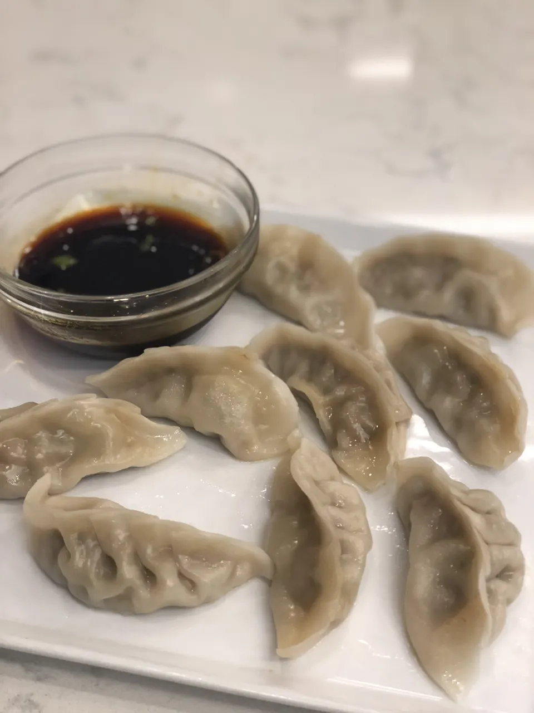

Image by Arlyn Osborne
Dumplings
Dumplings are probably the best meal to ever exist. When
I would get these in school, I would jump with joy. My
family would always make these for thanksgiving too.
The love for dumplings just runs in the family.
"The more I make this, the more I love this!
This is the best thing that has ever existed!"
- My Mom
Yield: 40 Dumplings
Prep Time: 70 Minutes
Ingredients
Sauce |
| Amount |
Unit |
Ingredient |
| 1/2 |
cups |
low sodium sauce |
| 2 |
tablespoons |
vinegar |
| 1 |
tablespoons |
rice vinegar |
| 1 |
tablespoons |
chili oil |
Dumplings |
| Amount |
Unit |
Ingredient |
| 2 |
bunches |
scallions, cut into thirds |
| 5 |
garlic cloves |
| 1 | tablespoon chopped ginger
| 2 | tablespoons hoisin sauce
| 2 | tablespoons soy sauce
| 1 | tablespoon sesame oil
| 1 | pound ground pork
| 2 | tablespoons grated garlic
| 1 | beaten egg
| 40 | wonton wrappers
Directions:
- Whisk together the ingredients for the dipping sauce,
making sure the sugar dissolves. Set aside.
- Add the scallions, garlic, ginger, hoisin, soy sauce and
sesame oil to a small food processor. Pulse until finely
chopped. Transfer the mixture to a large bowl.
- Add the beaten egg and mix to combine.
- Add the pork and mix to combine
- Place about 1 tablespoon of filling in the center of a
wrapper. Dip your finger in the water and use it to
moisten the edge of the wrapper.
- Pinch one end tightly to seal and then make several
pleats to close up the filling entirely. Flatten out the
bottom. If not pleating, simply fold one half of the
wrapper over the filling and press together to seal.
- Set the dumpling on the prepared baking sheet and cover
with a damp towel while you continue filling the rest.
- Heat a large nonstick skillet over medium heat. Add 1 cup
of water to the pan, then place 6-7 dumplings in the
water. Cover with a clear lid and let steam for 10
minutes, without lifting the lid.
- Continue with the remaining dumplings. Serve the dumplings
with the dipping sauce.
You can freeze any uncooked dumplings and cook them later
using the same method, but steaming for an additional
1–2 minutes longer.
Now you can eat!
Tips
- You can eat these with chopsticks or a fork!
- You don't have to dip it in soy sauce, but it will
taste better!